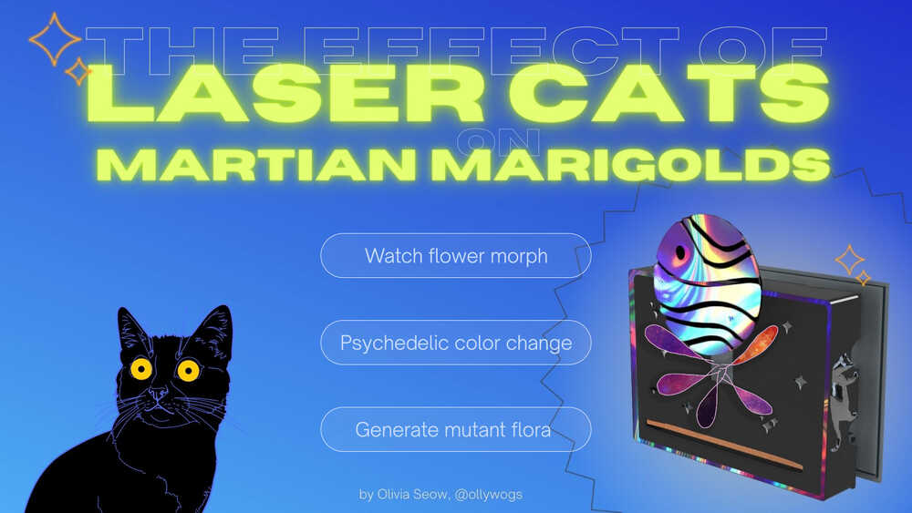
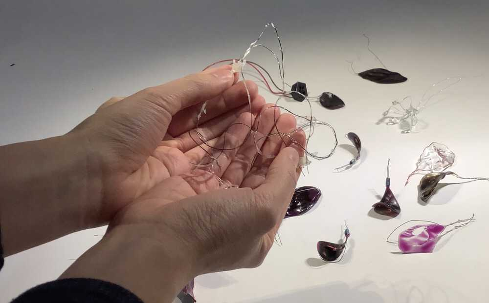
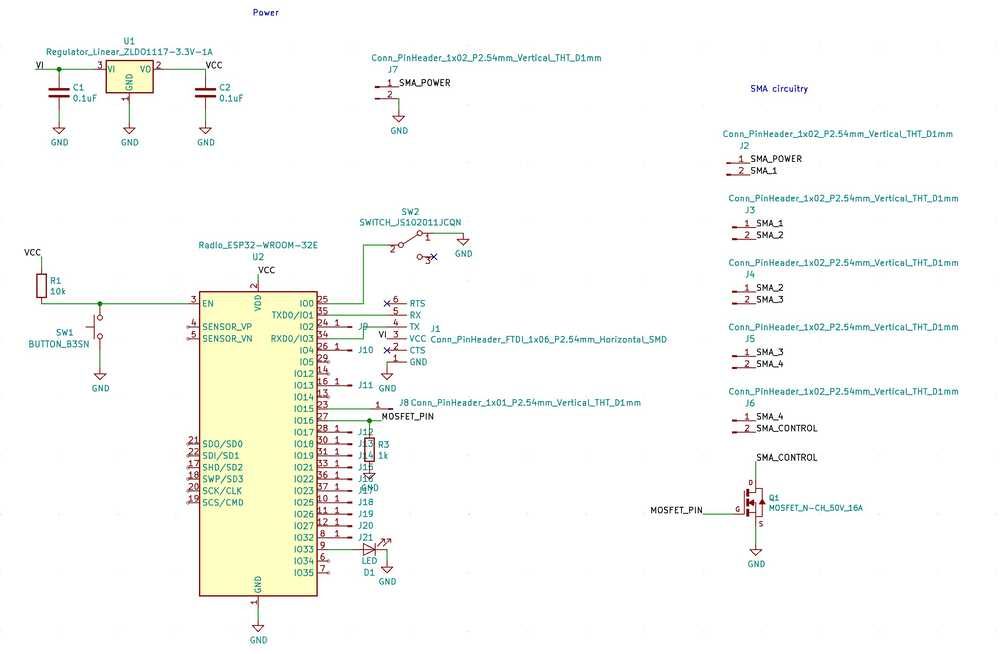
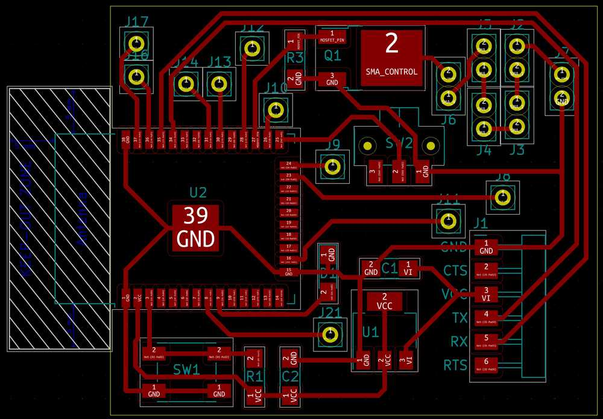
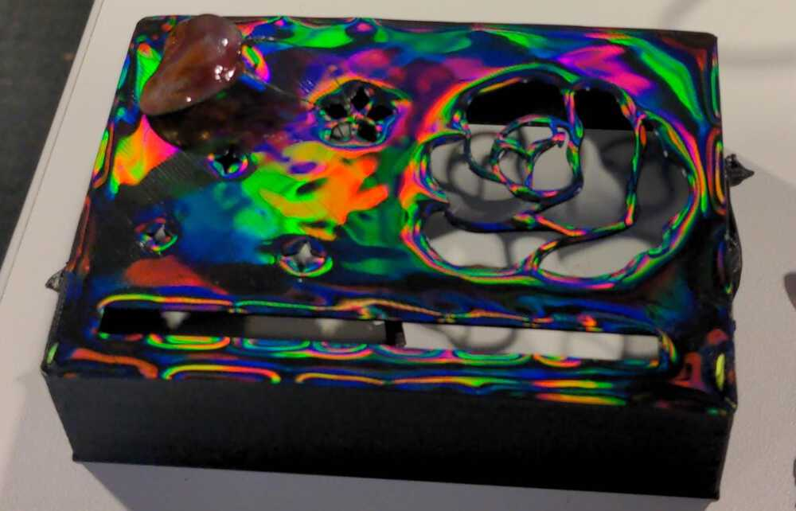
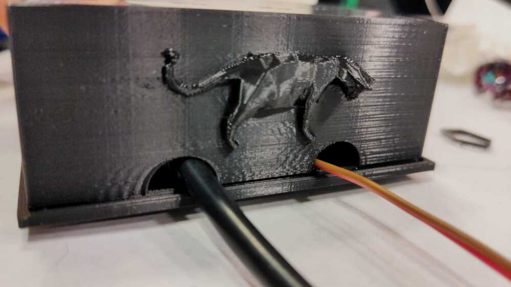
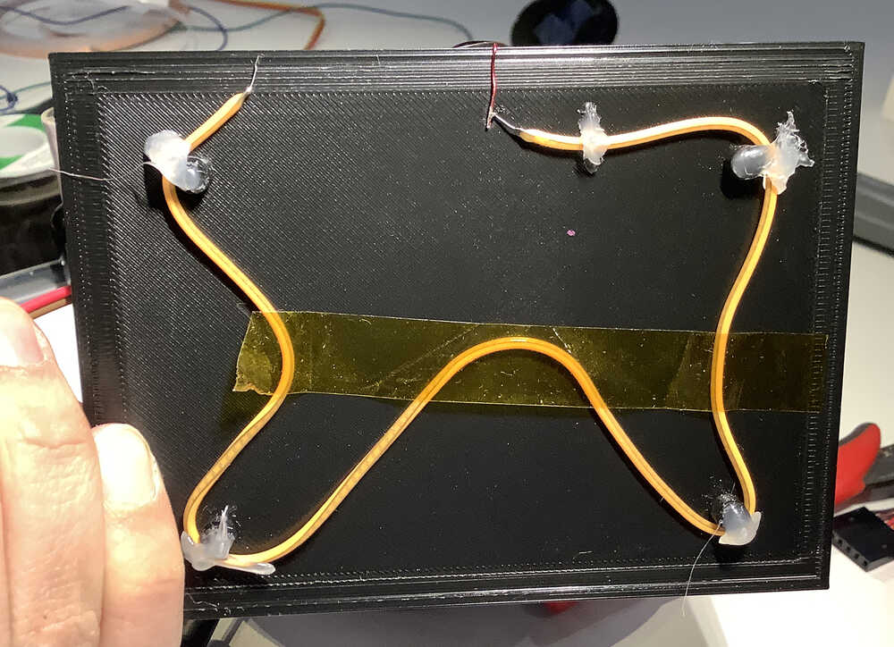

Nov 3, 2021
The Effect of Laser Cats on Martian Marigolds
1. What does it do?
Touch or remotely trigger the blooming and color changing of a martian marigold and generate mutant flora.
The title of my project is inspired by a book, The Effect of Gamma Rays on Man-in-the-Moon Marigolds in which Tillie posits that gamma rays on the moon can sometimes cause good mutations on marigolds.

My SMA flower has outerspace alien-y vibes, and mutant flora GAN can be generated by sliding your finger across on-device slider.
Summary slide

2. My contribution
NITINOL IS REALLY DIFFICULT TO WORK WITH…
…especially without access to precision engineering machines. It was advised that we stay away from this material. However, I really wanted to achive the organic motion without external pulleys or motors. After many hours of persistance, and many failed attempts (see small sample below)…

… I found a way to train the wire to behave in a desirable way without using an industrial oven 🎉
👉 My solution is to make a simple shape that is easy to hold (e.g. a loose knot) with an insulated tool. Hold the wire in place while running power (8V 1A in my case) through the wire, and continue holding it when disconnecting from power supply. Do this several times. This “trains” the wire to exist more harmoniously with your desired shape.
NITINOL DOESN’T SOLDER EASILY…
… I created a process to attach Nitinol securely, using crimps, solder, and resin. I detail this in a video below.
DANCING NITINOL ALONE IS NOT VERY VISIBLE…
… I found a unique way to fill and color the empty space in an SMA petal such that its movement is not restricted. Moreover, my method allows us to use the heat generated by the SMA to trigger a heat sensitive color change. This video shows an early test where a petal was able to change from purple to blue during movement:
3. Design components
In the last few weeks, I have worked with SMA to create a dancing wire flower. I previously discussed possibly using glue to fill the gaps in the wire, to achieve a nicer aesthetic.
The glue would need to be able to withstand relatively high (e.g. 90°C) temperature, and allow shearing by being robust yet flexible. I thought of using fabric glue to create a semi-slime consistency, and this proved to be quite a challenge as the glue clung to the wire and did not form a firm across the petal like I had imagined it would.
During molding and casting week, I came upon the idea that a thin film of resin or Oomoo could to the trick. Ultimately, I was able to find a quick drying UV-activated resin that was supposedly non-toxic, although I still took precautions to avoid direct contact with the material.
It was rather time-consuming to form the resin film over the wire petals. Eventually, I was able to create petals by dipping the wire loops into resin as though it were a bubble mixture. Here are a selection of petals I made during my experiments.
There are many failure modes, such as:
- It is difficult to form a consistant film over the SMA. The many factors include resin consistency, dipping speed, wire shape, wire size and thickness of wire. Getting a thin film across a wire loop requires just the right speed and movement (Swish and flick, remember, swish and flick).
- Curing resin is an exothermic reaction, and the expelled heat triggers the SMA to move, which in turn breaks holes in the resin film. This problem is can be alleviated with my method.
- While shape changing, the SMA can break free from the resin film, especially if the temperature gets too high. Adding an additional layer of resin helps to protect against this, however…
- Too thick a resin film can prevent the SMA from moving altogether, can cause drooping, and is also less aesthetically pleasing to me.
Additionally, using my wire forming technique from before, the SMA would twist when heated, further increasing the likelihood of the resin tearing.
After plenty of trial-and-error, I found a way to train the SMA to form wire petals that do not twist (but rather, bloom and fall predictably). My creation process is illustrated in the following video.
Electronics
I made a board with an ESP32 so that the flower could be networked.
 
Here are the petals moving when connected to the PCB!
3D design
To put the piece together, I designed a 3 piece enclosure. This design used 2.6g (planet) + 18.49g (case) + 22.49g (base) (< USD1) of filament. The planet is designed to slide over and close the case after the flower has been added.
Interactive 3D model viewer (zoom, drag, and pan):
I printed the case using this technique to achieve a holographic effect.
I found the colors lovely, but a little too distracting for this application, so I restricted it to the borders instead.

Assembled, this is what the flower looks like:
Kitty guards!

Sensor and networking
I added a capacitive touch sensor that can be used to generate mutant flowers on a p5.js sketch. With more time, I could make a more realistic generative model, like with this kitty cat GAN.
Twinkley things
I came across flexable LED filaments recently and wanted to try incorporating them.

Since I had the idea after making my board, I used magnet wire to connect the circuit. The effect is pretty ethereal! However, I did not account for the fact that these filaments get very hot. It melted the hot glue I used to hold it in place, so I took them off 🙁 I could have probably ran them at a lower power as they are pretty bright, which distracts from the thermochromic element in my opinion.
4. BOM
Consumables for this project amount to about USD14. Where components could not be found in the fab inventory, I used Octopart to find an estimate for this BOM:
| Part | Reference | Source | Amt | Unit Price ($) |
|---|---|---|---|---|
| Copper board | FR4 |
fab | 2” x 1.75” | 0.10 |
| MCU | ESP32-WROOM-32D |
fab | 1 | 2.80 |
| Tact button | B3SN |
fab | 1 | 0.48 |
| Resistor (10kΩ) | 311-10.0KFRCT |
fab | 2 | 0.01 |
| Capacitor (0.1µF) | 399-4674-1 |
fab | 2 | 0.12 |
| Regulator | ZLDO1117G33DICT |
fab | 1 | 0.34 |
| LED | 1516-1164-1 |
fab | 1 | 0.25 |
| Slide switch | AYZ0102AGRLC |
fab | 1 | 0.50 |
| Transistor | rfd16n05lsm |
fab | 1 | 0.27 |
| Header pins | S1143E-36 |
fab | 6 | 0.09 |
| Header pins | 6-146132-4 |
fab | 12 | 0.08 |
| Jumper wires | 1528-1162 |
fab | 7 | 0.09 |
| DC jack | 1528-1386 |
fab | 1 | 1.90 |
| Copper tape | 1128 |
tmg | 3” | 0.09 |
| Nitinol | 40-30 |
tmg | 20” | 0.10 |
| Resin | AR007ABWYBS |
Amazon | 0.7oz | 2.72 |
| Ink | ASKU0056 |
Amazon | 0.01oz | 0.28 |
| Nail polish | Shell We Dance |
CVS | 0.01oz | 107 |
| PLA filament | PLA-1KG1.75-BLK |
Hatchbox | 43.58g | 0.02 |
| LED filament | 3V |
Aliexpress | 1 | 0.01 |
In addition to these consumables, I used a USD10 data connector (TTL-232R-3V3) and USD15 12V AC adaptor (1953663).
Machines used
- Roland SRM-20 milling machine
- Soldering iron (including solder) and hot air rework station
- Prusa mini 3D printer and diffraction grating trick explained here
- 48W UV lamp
5. Reflections and future improvements
I am quite pleased with what I achieved given the time that I had. I managed to train the SMA The flower has an other-worldly movement, and the slider works very well.
- The pink nail polish from Sally Hansen beads up when applied to SMA and looks pretty bad. I want to find a better (and easier) way to enamel the SMA in the future.
- The spacing of the box could be reevaluated to allow people to interact with the slider without interferring with the flower
- The colors of the petals could be further experimented with.
- The planet on the case did not fit very well, and had to be separately affixed. In the future, I would design a locking mechanism to do this more cleanly.
- Initially, I made a bigger enclosure but it made it difficult to access the reset button on the ESP32. I should consider this earlier in future designs.
Note: it is also possible to make a complete flower using a single enameled wire, as shown here:
Final video
One minute video: